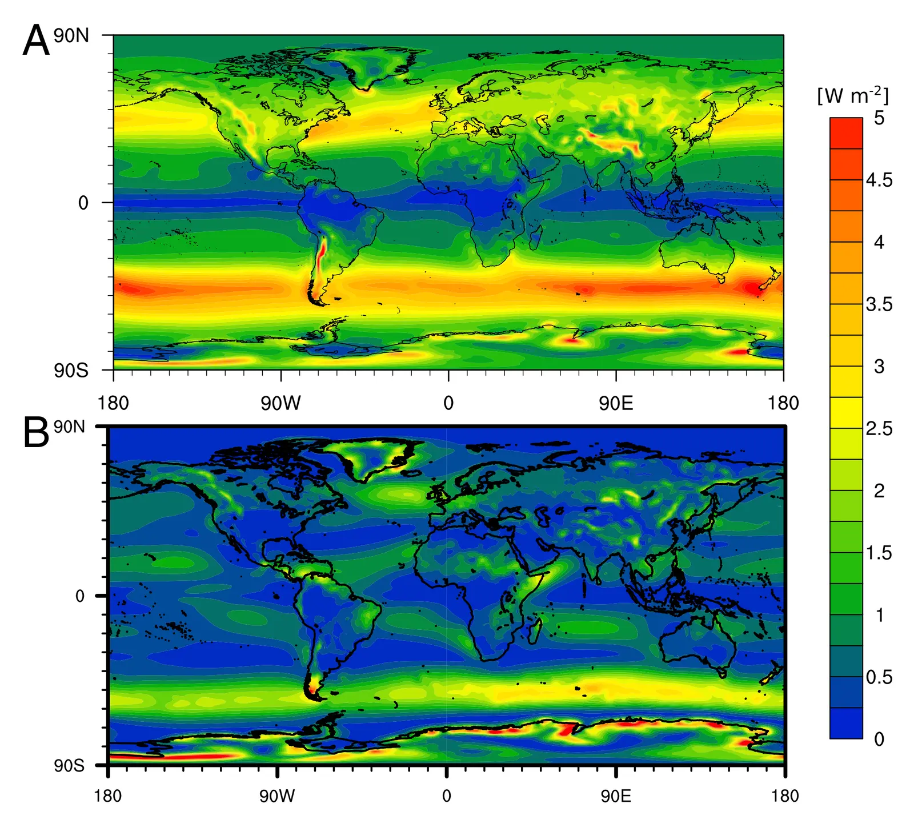

Geophysical potential for wind energy over the open oceans
Key finding. In the North Atlantic, the overlying atmosphere can sustain a greater downward transport of kinetic energy than over land, so wind power generation over some ocean areas can exceed power generation on land by a factor of three or more.

What question did this research address?
Wind speeds over the open ocean are often higher than over the windiest land, which has motivated efforts to develop deep-water wind technology.
But higher wind speed does not by itself mean more extractable energy. The speed might reflect nothing more than the absence of surface drag, in which case installing turbines would slow the wind and the advantage would evaporate. The real question is whether the atmosphere can replenish the kinetic energy that turbines remove, and this paper asked exactly that.
What did we find?
The distinction the paper draws is between wind speed and energy replenishment. Extractable power over a large area is limited by the rate at which kinetic energy is transported down to turbine height, not by the speed observed before any turbines are installed.
Focusing on the North Atlantic, the analysis finds genuine evidence for greater downward transport of kinetic energy over the open ocean, so the higher speeds are not merely an artefact of low surface drag.
The resulting difference is large. Power generation over some ocean areas can exceed generation on land by a factor of three or more.
The mechanism is atmospheric rather than local. Over the open ocean, energy can be drawn down from higher in the atmosphere in a way that continental boundary layers do not support.
Why does it matter?
The result establishes that open-ocean wind is a categorically different resource rather than a marginally better version of the land resource, which changes how much a deep-water technology would be worth developing.
It also demonstrates the right way to ask about a renewable resource at scale. Asking how hard the wind blows gives the wrong answer; asking how fast the atmosphere resupplies the energy that is removed gives the right one.
Citation
Anna Possner and Ken Caldeira (2017). Geophysical potential for wind energy over the open oceans. Proceedings of the National Academy of Sciences 114, 11338-11343.
Related
- How much wind power can the atmosphere actually supply?
- Atmospheric pressure gradients and Coriolis forces provide geophysical limits to power density of large wind farms (Antonini and Caldeira, 2021)
- Spatial constraints in large-scale expansion of wind power plants (Antonini and Caldeira, 2021)